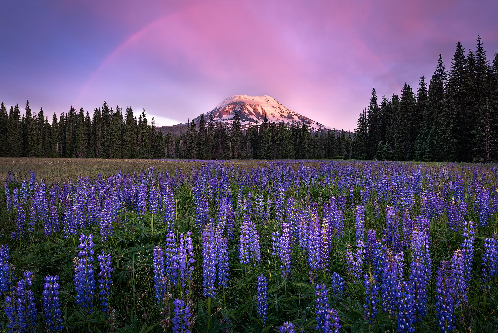
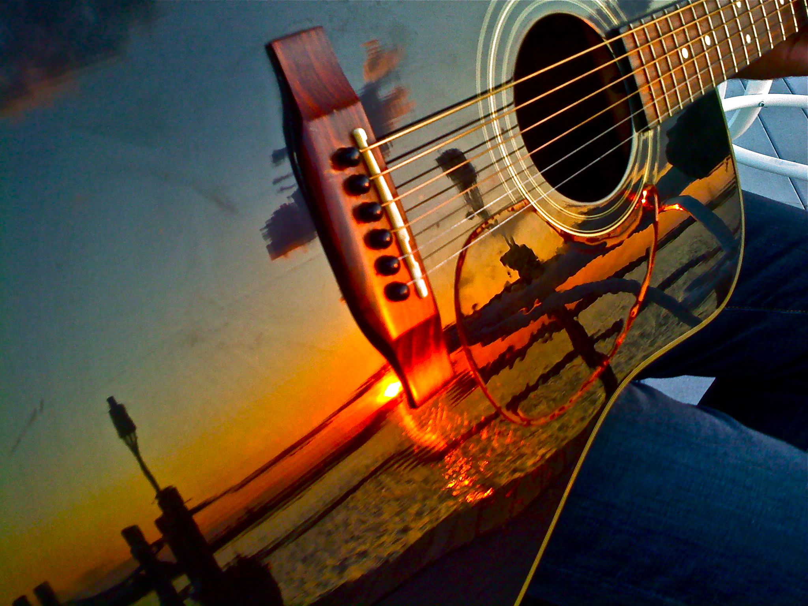
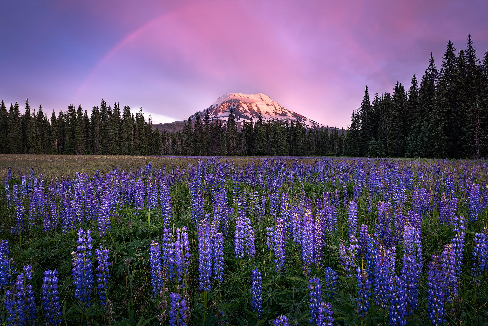
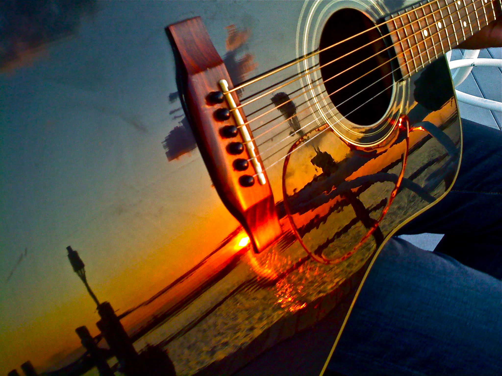
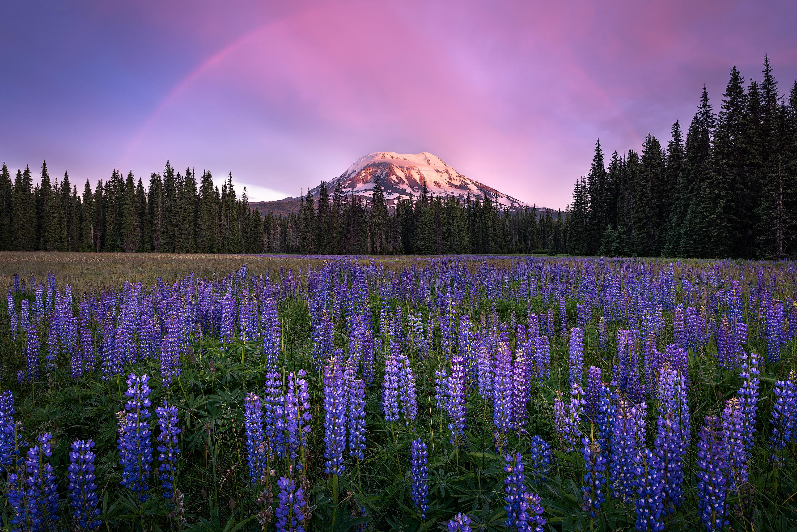
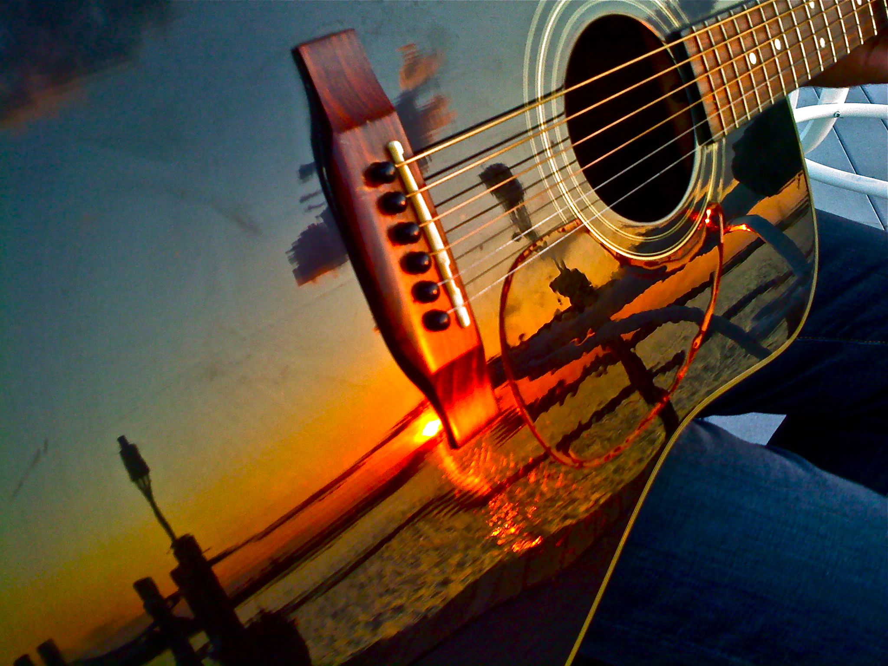
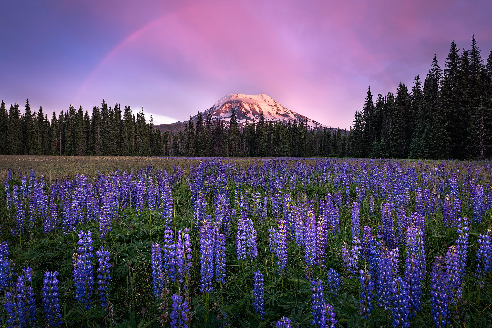
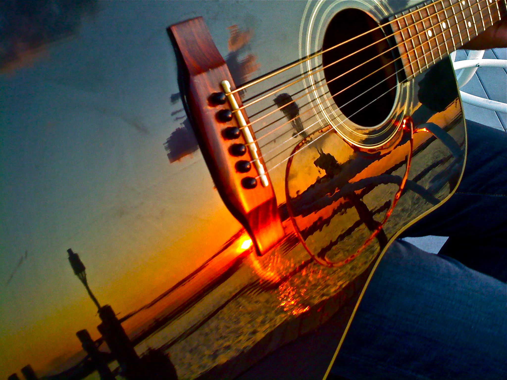

Ever wondered how a single click can freeze a moment in time, preserving it forever? Or how a well-crafted video can transport you to a different world, immersing you in a captivating narrative? Or watched a video that transported you to another time and place? In today’s digital age, where everyone is armed with a smartphone camera, the power of visual communication has never been more prominent. But there’s so much more to photography and videography than simply pointing and shooting. Through our blog, we aim to unravel the secrets behind capturing breathtaking images and crafting compelling videos. From mastering composition and lighting techniques to exploring the latest trends and tools, Photography and videography are more than just capturing images or recording videos. They are powerful mediums of self-expression, communication, and documentation. Through the lens, photographers and videographers have the ability to freeze time, evoke emotions, and tell compelling stories. In our blog, we aim to explore the techniques, tools, and creative processes behind creating breathtaking visuals.
At Photography and Videography, we are passionate storytellers dedicated to capturing life's most precious moments through the art of videography and photography. With years of experience and a keen eye for detail, we transform fleeting moments into lasting memories that you can cherish forever.
Our mission is to provide exceptional visual content that resonates emotionally and aesthetically. We strive to exceed our clients' expectations by delivering creative, high-quality work that reflects their unique stories and visions.
Wilky Jomuad
Charina Medrano
Lucas Lapingcao